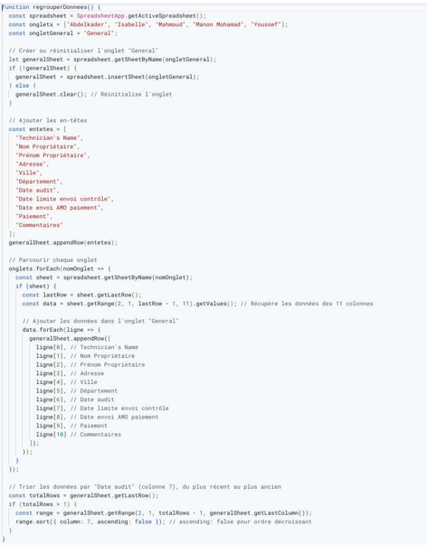
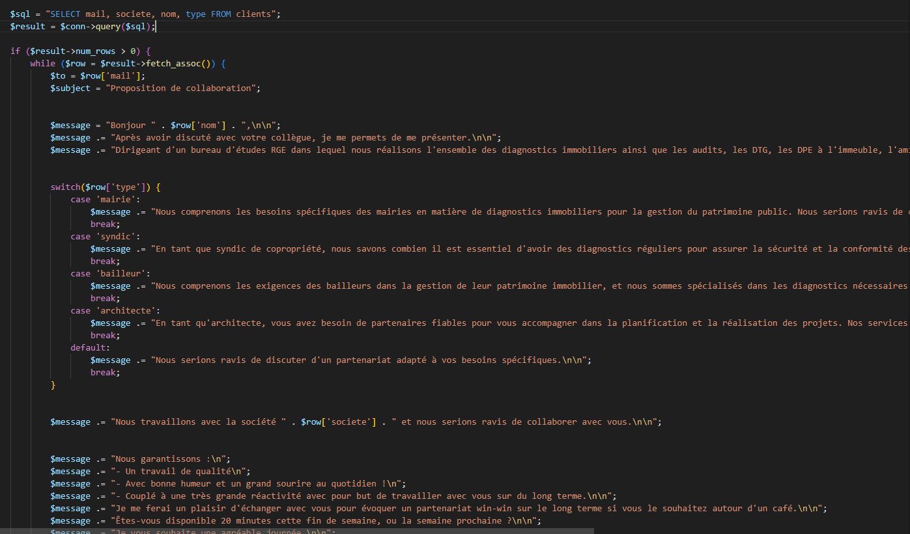
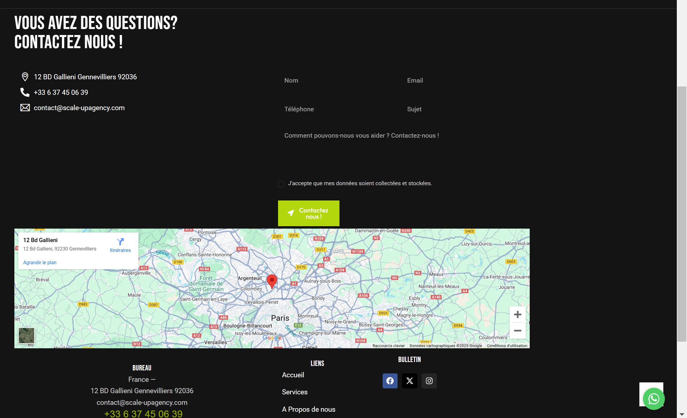

Période : Du 13 janvier au 15 février 2025
Entreprise : Elia Expert
Technologies utilisées : Google Apps Script, PHP,JavaScript, MySQL, WordPress
Travail : Missions individuelles
Introduction : Durant mon stage chez Elia Expert, j'ai travaillé sur plusieurs missions visant à automatiser et améliorer les outils numériques de l'entreprise.
Missions réalisées :
Quelques Illustrations :
Illustration du script Javascript pour l'automatisation du Google Sheet :
Illustration du script PHP pour l'automatisation d'envois de mails :
Illustration de la page contact WordPress :
Bilan personnel : Ce stage m’a permis de développer mes compétences en automatisation (Google Apps Script, PHP) et de découvrir le no-code avec WordPress. J’ai appris à optimiser les processus internes d’une entreprise et à rendre les outils numériques plus efficaces.